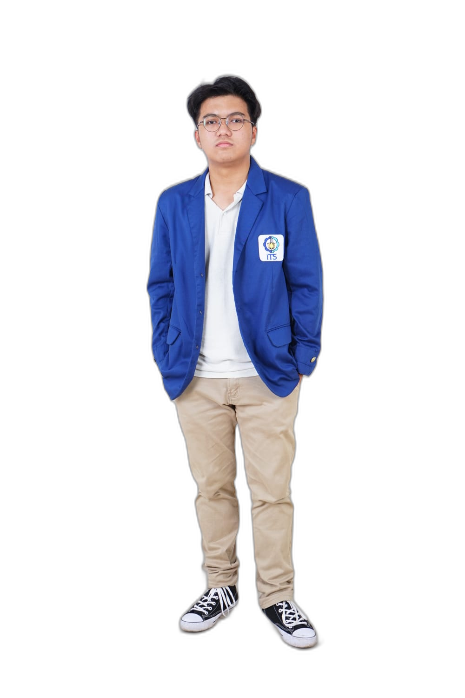
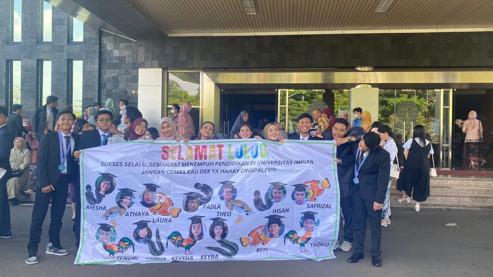
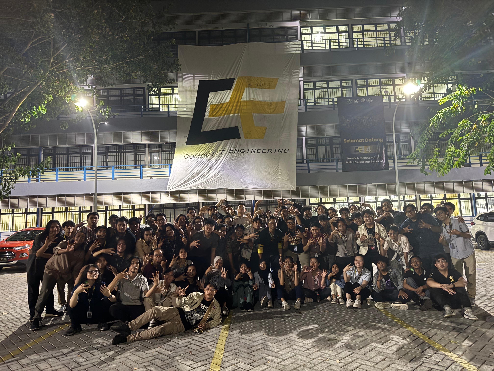
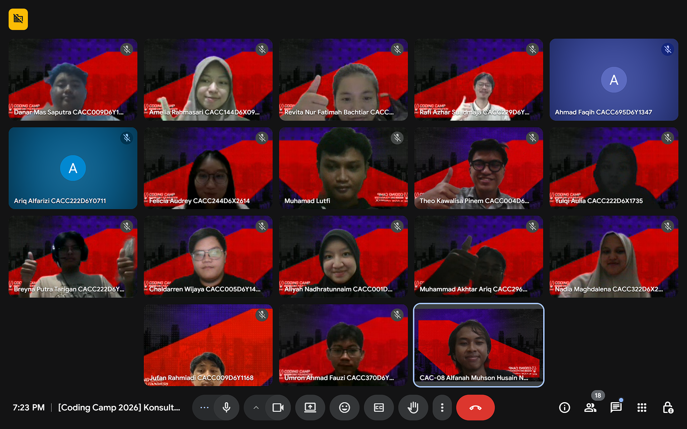
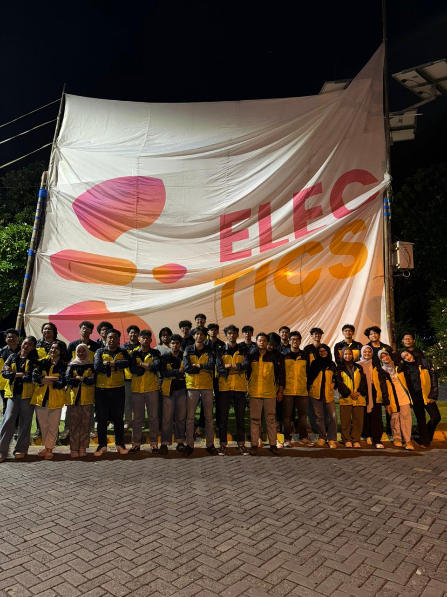
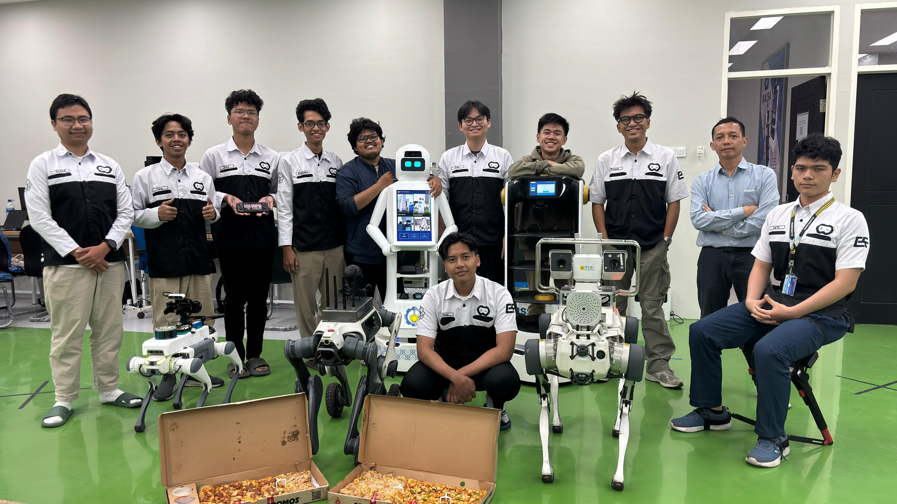
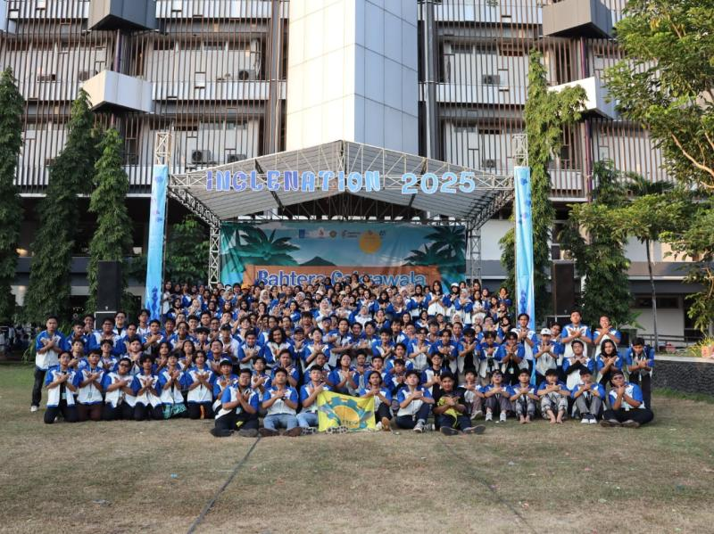
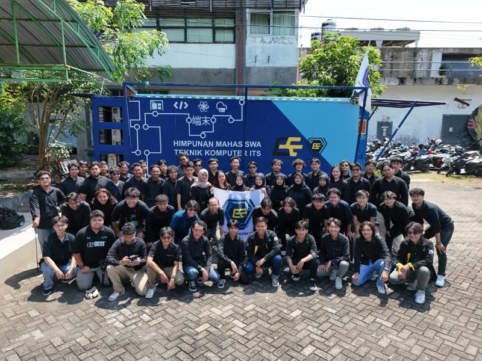
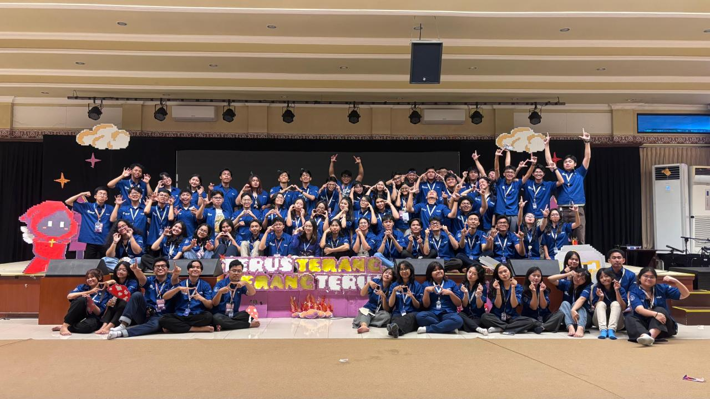
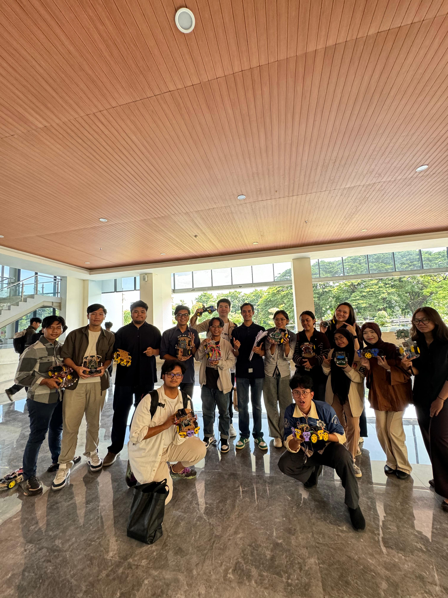
An intelligent, self-driving robotic vehicle powered by an ESP32 microcontroller. Engineered for real-time sensor processing, obstacle avoidance, and dynamic pathfinding.
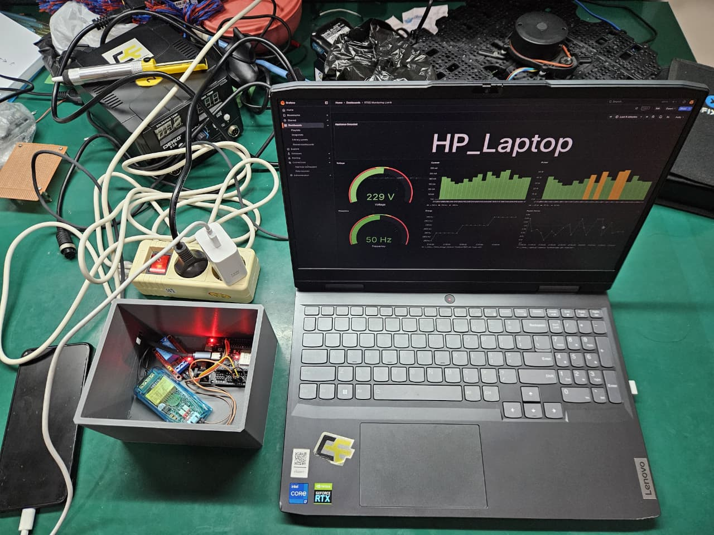
IoT-based power monitoring system detecting electrical device anomalies.
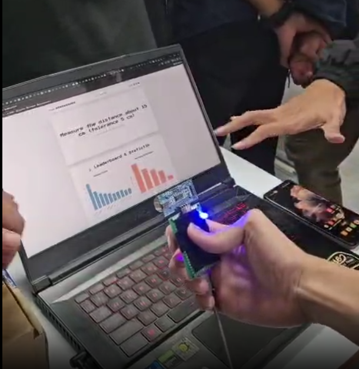
Real-time distance measuring game with ESP32.
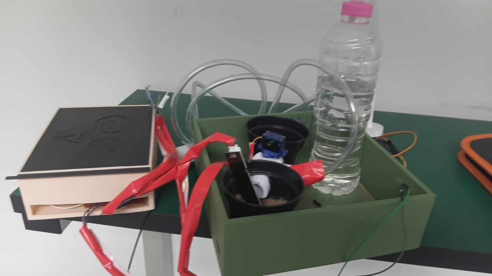
Intelligent IoT plant watering.
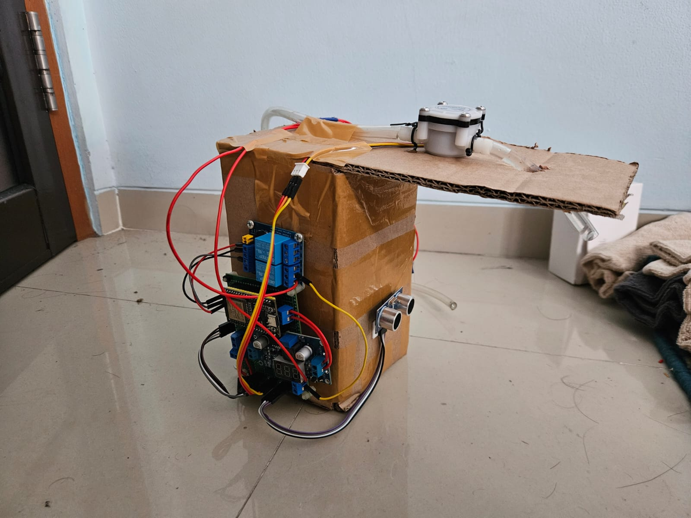
End-to-end IoT Smart Dispenser built with ESP32 & Flutter.
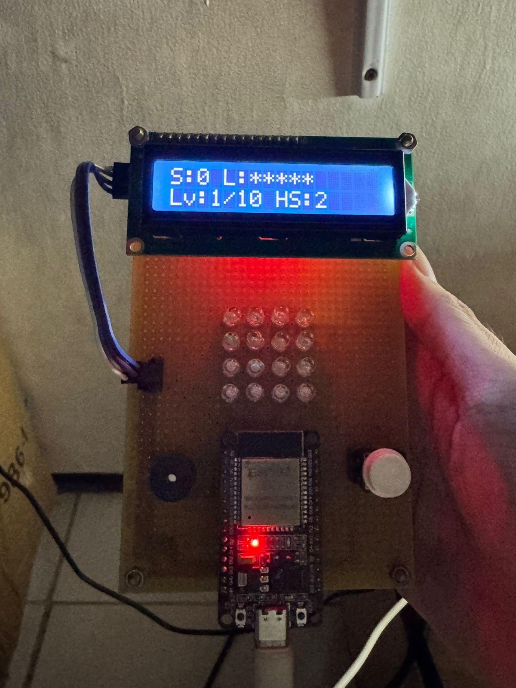
Interactive arcade LED matrix game.
My inbox is always open. Whether you have a question or just want to say hi, I'll try my best to get back to you!